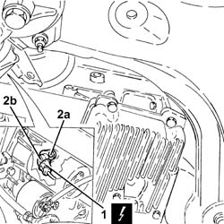
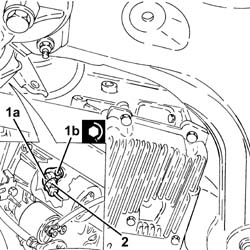
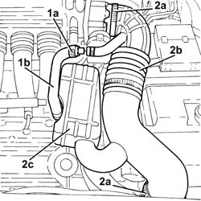
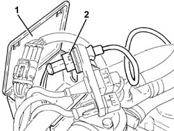
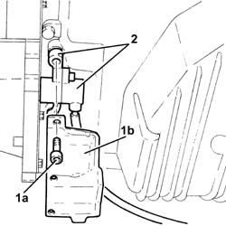

5510C34 RPM AND TIMING SENSOR (SINGLE) - R+R
- Path
- Procedures > 55 ELECTRICAL EQUIPMENT > 5510 ENGINE IGNITION > 5510C COIL, ECU, SENSORS > 5510C34 RPM AND TIMING SENSOR (SINGLE) - R+R
- Kind
- repair procedure (removal / refitting; the operation number is the code)
- Applies to
- engines: 1.8 T.SPARK, 2.0 JTS, 3.2 V6; all production periods
- Interactive page
- https://sloeber94.github.io/elrnDB-aGt/en/#/125001608
Applies to: engines: 2.0 JTS; all production periods
 Removing
Removing
 Refitting
RefittingMake sure that the ignition key is in the OFF position, then disconnect the battery terminal (-).
Description | Connector | |
|---|---|---|
- | Battery | See A1B BATTERY ( BATTERY NEGATIVE ) |
Proceed with the removal
Op. 7055B54 UNDER-ENGINE GUARD - R R.
Proceed with the removal
Op. 1076B18 RIGID SECTION OF EXHAUST PIPE BETWEEN CATALYTIC CONVERTER AND SILENCER - R + R.
1. Disconnect the electrical connection from the rpm sensor.
Description | Connector | |
|---|---|---|
1 | Rpm sensor | See K46 RPM SENSOR ( CONNECTORS ) |
2. Undo the bolt (2a) and remove the rpm sensor (2b).

Applies to: engines: 2.0 JTS; all production periods
Refitting
Removing1. Position the rpm sensor (1a) in its housing and secure it tightening the bolt (1b) to the recommended torque.
Fastening | Component | Ø | Value (daNm) | |
|---|---|---|---|---|
1b | - | - | - | - |
2. Connect the electrical connection to the rpm sensor.

Applies to: engines: 2.0 JTS; all production periods
Proceed with the refitting
Op. 1076B18 RIGID SECTION OF EXHAUST PIPE BETWEEN CATALYTIC CONVERTER AND SILENCER - R + R.
Proceed with the refitting
Op. 7055B54 UNDER-ENGINE GUARD - R R.
Connect the negative battery terminal (-).
Remove the vehicle from the lift.
Applies to: engines: 3.2 V6; all production periods
Removing
RefittingPosition the vehicle on a lift.
Make sure that the ignition key is in the OFF position, then disconnect the battery terminal (-).
Description | Connector | |
|---|---|---|
- | Battery | See A1B BATTERY ( BATTERY NEGATIVE ) |
1. Loosen the band (1a) and disconnect the oil vapour recirculation pipe (1b) from the corrugated hose.
2. Loosen the bands (2a) and remove the corrugated hose (2b) complete with resonator (2c).

Applies to: engines: 3.2 V6; all production periods
1. Open the electrical connection holder case.
2. Disconnect the electrical connection for the engine rpm sensor.
Release the electrical wiring for the engine rpm sensor from the fastenings.

Applies to: engines: 3.2 V6; all production periods
Proceed with the removal
Op. 7055B54 UNDER-ENGINE GUARD - R R.
Proceed with the removal
Op. 1076B82 LEFT EXHASUST PIPE BETWEEN CATALYTIC PRECONVERTER AND CONVERTER R R.
1. Undo the bolts (1a) and remove the engine rpm sensor shield (1b).
2. Remove the engine rpm sensor complete with mounting.

Applies to: engines: 3.2 V6; all production periods
Refitting
RemovingPlace the engine rpm sensor complete with mounting in its housing.
Place the engine rpm sensor guard in its housing and secure it using the bolts.
Proceed with the refitting
Op. 1076B82 LEFT EXHASUST PIPE BETWEEN CATALYTIC PRECONVERTER AND CONVERTER R R.
Proceed with the refitting
Op. 7055B54 UNDER-ENGINE GUARD - R R.
Secure the electrical wiring for the engine rpm sensor to the fastenings.
Connect the electrical connection for the engine rpm sensor.
Close the electrical connection holder case.
Place the corrugated hose complete with resonator back in its housing and tighten the bands.
Connect the oil vapour recirculation hose to the corrugated hose and tighten the band.
Connect the negative battery terminal (-).
Remove the vehicle from the lift.
Applies to: engines: 1.8 T.SPARK; all production periods
Removing
Refitting- Make sure that the ignition key is in the OFF position, then disconnect the battery terminal (-).
- Op. 1072C44 EXHAUST MANIFOLD HEAT SHIELD ON BULKHEAD - R+R
- Op. 1080B40 CATALYTIC PRE-CONVERTER - R R
- Disconnect the electrical connection from the rpm sensor.
Description | Connector | |
|---|---|---|
1 | Rpm sensor | See K46 RPM SENSOR |
2. Undo the bolt (2a) and remove the rpm sensor (2b).
Applies to: engines: 1.8 T.SPARK; all production periods
Refitting
Removing- Position the rpm sensor (1a) in its housing and secure it tightening the bolt (1b) to the recommended torque.
Fastening | Component | Ø | Value (daNm) | |
|---|---|---|---|---|
1b | - | RPM SENSOR | (Engine crankcase side) |
2. Connect the electrical connection to the rpm sensor.
Applies to: engines: 1.8 T.SPARK; all production periods
- Op. 1080B40 CATALYTIC PRE-CONVERTER - R R
- Op. 1072C44 EXHAUST MANIFOLD HEAT SHIELD ON BULKHEAD - R+R
- Connect the negative battery terminal (-)
- Remove the vehicle from the lift.
Topics linked from this page (5)
- 1072C44 EXHAUST MANIFOLD HEAT SHIELD ON BULKHEAD - R+R
- 1076B18 RIGID SECTION OF EXHAUST PIPE BETWEEN CATALYTIC CONVERTER AND SILENCER - R + R
- 1076B82 LEFT EXHASUST PIPE BETWEEN CATALYTIC PRECONVERTER AND CONVERTER R R
- 1080B40 CATALYTIC PRE-CONVERTER - R R
- 7055B54 UNDER-ENGINE GUARD - R R
Topics that link to this page (6)
- 1020A20 CRANK CASE OIL SUMP - R + R CLEAN SEALS FOR SEALANT APPLICATION
- 1020D10 FRONT CRANK SHAFT OIL SEAL COVER - R + R AND REPLACE SEALS WITH TIMING BELT REMOVED
- 1020D12 FRONT CRANK SHAFT OIL SEAL COVER - R + R AND REPLACE SEALS
- 1020D51 CRANK SHAFT REAR MOUNT - APPLY SILICONE TO MATING SURFACES
- 1084B12 ENGINE OIL PUMP - R+R
- 1084B23 OIL PUMP CONTROL RETURN - R R